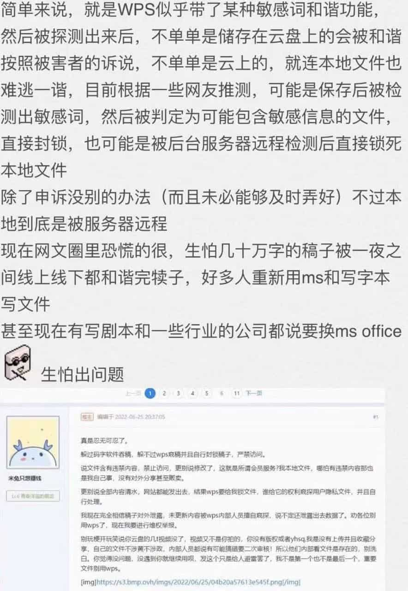
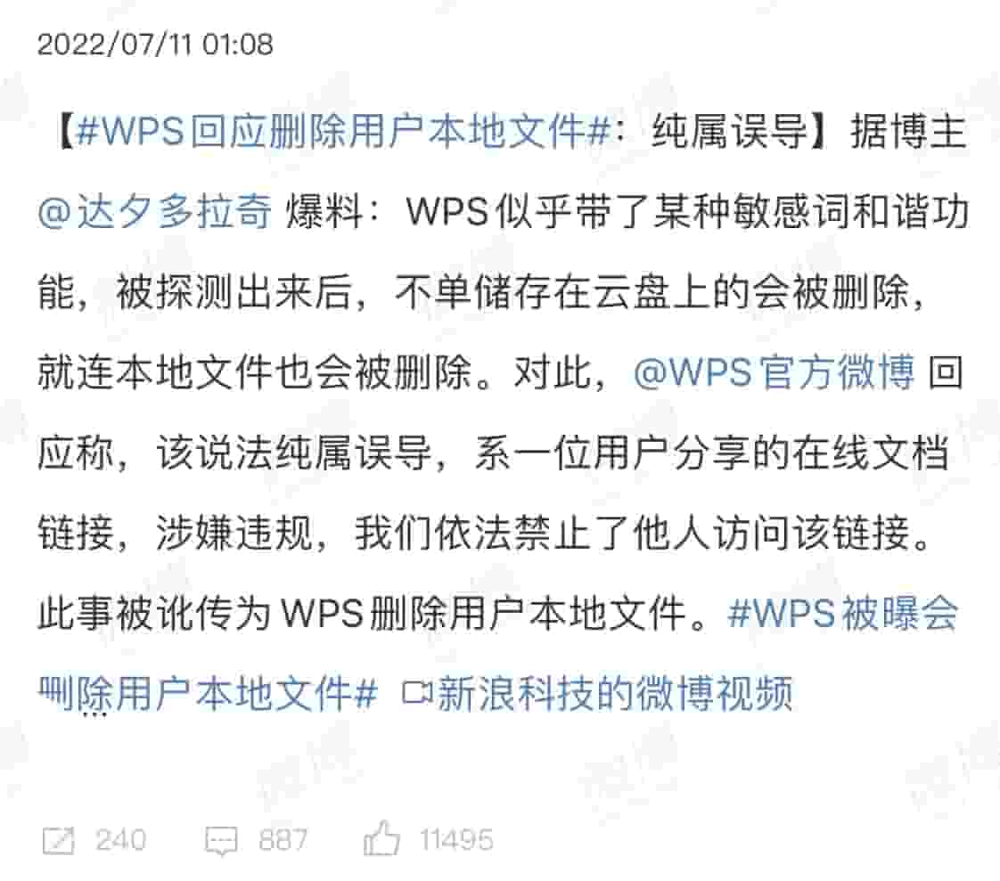
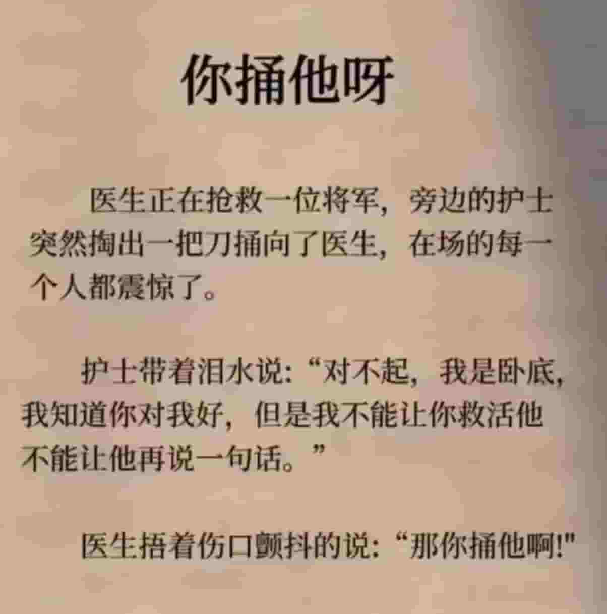
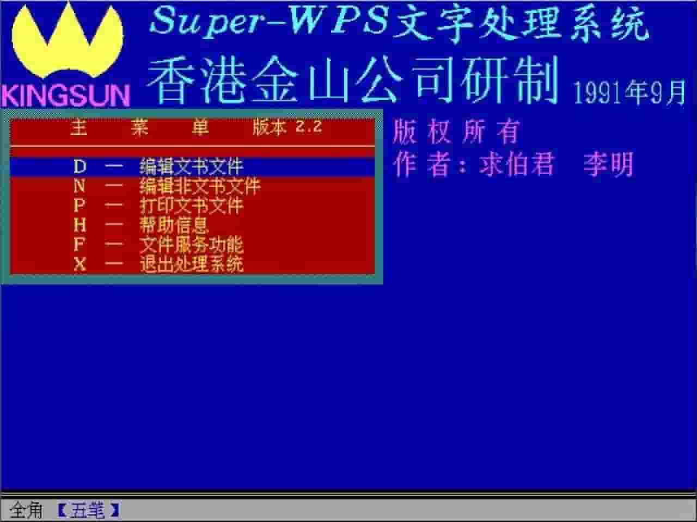

借着WPS的困境讲讲三种维度的架构
王福强
背景
有人反映自己通过WPS写的文档被锁定，还有的说自己本地文件被删：

金山就此也辟谣了：

我相信，这个辟谣的可信度还是可以的，应该还是合规性问题，而不是随意删除文件，如果是随意删除文件，那就涉及到破坏用户数据了，这个，破坏计算机系统罪不知道适用不适用啊；）
实际上，之前很多用户反映，什么云文档啦或者什么云音乐啦，要么会查看用户的云文档内容，或者删除/锁定用户本地的音乐文件，其实这些都属于合规性问题，你骂企业是没有用的，企业要合法经营，也得遵守所在国家的法律框架不是？

由此，我们倒是可以引申出三种维度的架构问题…
信息监管架构
我们先抛开道德感不论，在一个有信息监管需要的地方，设计一套行之有效的监管实施架构最有效的方式就是法律，付诸于法律背后的神秘力量，然后展开到区域和实体的实施，这是更大力度的架构，也是我们首先要关注的架构设计。
至于记者证啦，搞搞活动啦，都只是属于运营的一部分。
企业作为监管架构下的某个实体，在框架设计的约束下运转。
商业架构
WPS的产品最早是单机产品，甚至于还是DOS时代的产物：

但单机产品有个最头疼的问题，尤其是在我们这片土地上： 盗版。
所以，随着网络的普及以及SaaS模式的出现，各大软件厂商逐渐将产品形态从单机转向云和SaaS模式，当然有办公协调层面的考虑，但从商业模式或者商业架构上考虑，SaaS模式带来的好处不单单是天然反盗版（因为缺乏信任，只能核心资产上收），更主要的是，从厂商的角度，可以年年收租金，月月都有现金流。
如果说过去用户可以通过付费买断软件的所有权，那么，今天用户只能通过付费买软件的使用权。 这就是SaaS产品和商业模式的本质： 租！
技术架构
现在让我们把视线落到大家认知里最常见的架构，也就是“技术架构”上来，如果让你作为架构师来设计像WPS这样云产品的技术架构，你会怎么设计？
是云+端等量同步吗？ 还是云为主，端为辅？ 甚至直接通过浏览器+云的模式，把所有核心职能都上收到云上？
如果要检测用户的文档内容是否符合合规要求，我们是在云端直接扫描呢？ 还是像当年杀毒软件那样，把病毒库下发到用户电脑端执行？ 要锁定不合规的文件，我们是云端直接权限控制，还是做指令下发？
好啦，留着些问题给大家去思考吧，毕竟，我们不是WPS的架构师；）
怎么办
这或许才是大家最为关心的，是的，就算了解了这些， 我们应该怎么办呢？
至少有两条路，至于路怎么走，当然你自己看着办咯~
要么，合规化操作。
比如那天华章的杨福川就做过出版行业使用WPS的实践和经验，其中就有提醒作者在内容创作过程中要注意的合规性问题。
要么，选择其它产品。
至少有三类产品可以作为替代品：
- Offic类替代品：这类替代品主要是为了那些习惯了使用office的人群（当然，前提是可以寻求这类替代品），比如退回到某个老版本的微软office，或者选择像LibreOffice这样的开源产品；
- Block Editor类替代品： 基于块（Block）的编辑器现在也发展的很成熟了，比如Notion，如果你能习惯这类内容编辑器，这也是一类不错的替代品选择；
- Markdown类替代品： 这个就比较geek了，偏纯文本，对于非程序员用户极其不友好，不推荐普通大众使用，虽然我现在日常最多的就是用这种方式，这个我之前讲过（git + markdown + pandoc）；
好啦，GL & HF，今天就这样吧！
「为AI疯狂」星球上，扶墙老师正在和朋友们讨论有趣的AI话题，你要不要⼀起来呀？^-^
这里
- 不但有及时新鲜的AI资讯和深度探讨
- 还分享AI工具、产品方法和商业机会
- 更有体系化精品付费内容等着你，加入星球(https://t.zsxq.com/0dI3ZA0sL) 即可免费领取。(加入之后一定记得看置顶消息呀！)

存量的时代，省钱就是赚钱。
在增量的时代，省钱其实是亏钱。
避坑儿是省钱的一种形式，更是真正聪明人的选择！
弯路虽然也是路，但还是能少走就少走，背后都是高昂的试错成本。
订阅「福报」，少踩坑，少走弯路，多走一步，就是不一样的胜率！